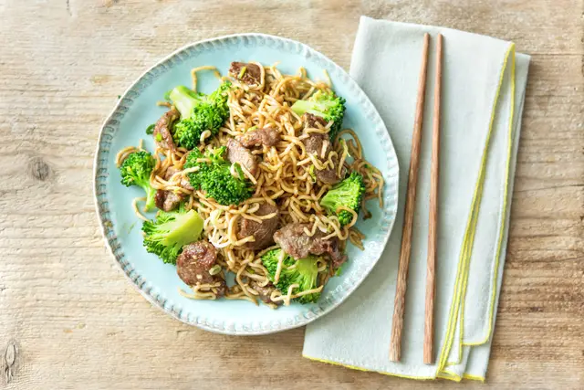

Rapid Stir-Fried Beef
and Broccoli
Home

- Beef Sirloin tips
- Scallions
- Garlic
- Cornstarch
- Ginger
- Yakisoba Noodles
- Ketchup
- Soy sauce
- Hoisin Sauce Jar
- Broccoli Florets
- Sesame Oil
- Sriracha
- Vegetable Oil
- Salt and Pepper
- Wash and dry all produce. Bring a large pot of salted water to a boil. Trim and thinly slice scallions. Mince or
grate garlic. Peel and mince ginger. Whisk together sesame oil, 1 TBSP ketchup, soy sauce, 1½ TBSP hoisin sauce,
and 1 TBSP water in a small bowl.
- Add broccoli to boiling water and cook until tender but still crisp, 3-4
minutes. Drain and rinse under cold water. Set aside.
- Toss steak tips with cornstarch in a large bowl. Season generously with salt and pepper. Heat a large drizzle of
oil in a large pan over high heat. (TIP: If you have a nonstick pan, break it out.) Toss in steak tips and cook to
desired doneness, 3-4 minutes. Remove and set aside.
- Heat a drizzle of oil in same pan over medium heat. Add garlic, ginger, and scallions and cook until fragrant, 1
minute, tossing. Toss in half the noodles from the package (we sent more) and a drizzle of oil. Break up noodles
until they no longer stick together, using tongs or two wooden spoons.
- Pour in 1 cup water, cover, and steam until noodles are tender, 3 minutes. (TIP: If your pan doesn’t have a lid,
carefully cover it with aluminum foil.) Uncover, increase heat to medium-high, and toss until noodles are tender,
3-4 minutes. Add sauce and toss to coat. Cook until sauce is thickened, 1 minute.
- Toss broccoli and steak into noodles to warm through. Season with as much sriracha as you like (careful, it’s
spicy). Season with salt and pepper. Divide between plates and serve.